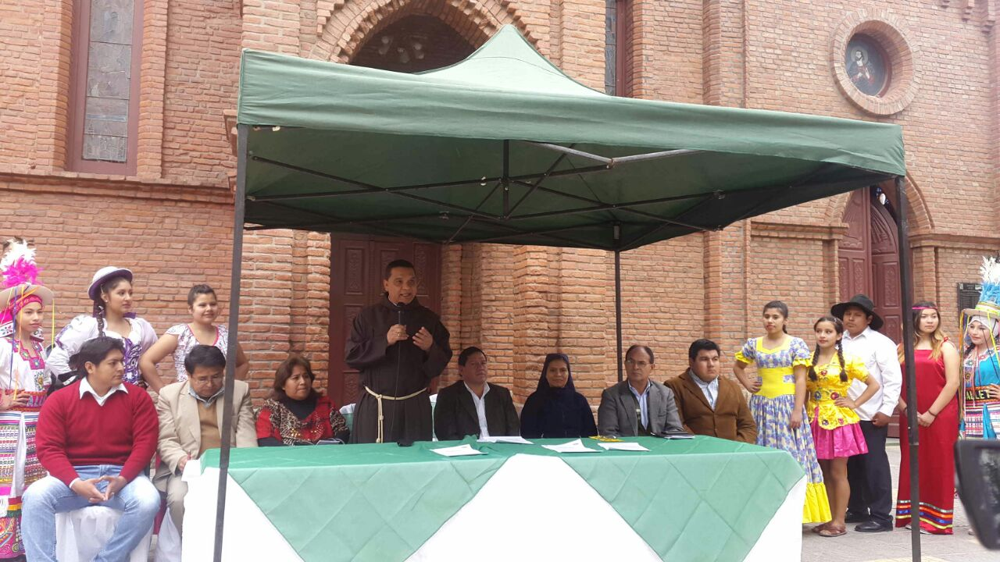
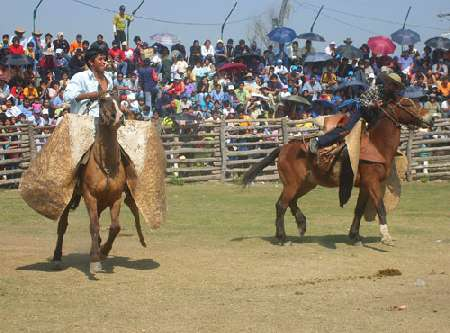

San Pedro
La festividad al Santo Patrono demostró la vocación religiosa, unidad y respeto a las tradiciones por parte de la población. Las autoridades locales mostraron un trabajo conjunto que derivó en el realce la fiesta.
El Pueblo de Yacuiba mostró su devoción a su Santo Patrono, San Pedro Apóstol, en dos jornadas de festividad religiosa 28 y 29 de junio, víspera y día de celebración, respectivamente. Toda la organización estuvo preparada por el Gobierno Municipal de Yacuiba, que obtuvo nota sobresaliente por parte de los asistentes.

Tradicion Chaqueña
Luego del receso radiofónico impuesto por el Gobierno de René Barrientos Ortuño en 1964, se inician los trámites ante la dirección general de comunicaciones, para obtener la licencia de funcionamiento de lo que sería RADIO FRONTERA, que luego de una larga espera ocacionada por la burocracia administrativa, recien sale al aire oficialmente un 4 de Agosto de 1968, para permanecer en el éter chaqueño hasta la fecha. Entre las principales metas de su propietario Juan Castillo Ruíz, estuvieron las de promover el desarrollo agropecuario, la cultura y la defensa de los recursos naturales. La fiesta de la tradición del Palmar, con los primeros festivale en 1981, recuperamos la danza y las tradiciones, que hoy son el atractivo de la vecina localidad de El Palmar, y que por ordenanza municipal se constituye en La Capital Folklórica del Gran Chaco.

El Asado Chaqueño
El Asado Chaqueño (carne a la parrilla), es una tradición que se realiza generalmente en reuniones familiares y de amigos, donde se comparten, además de la deliciosa carne, el infaltable vinito tinto y por supuesto, acompañado de música chaqueña.
La mateada
Tiene su origen en el vocablo quechua “mathi” que significa calabaza, calabacín o porongo fruto de la lagonaria vulgaris, que sirve para beber la infusión preparada con las hojas trituradas con la yerba mate. Por extensión se le llama mate al utensilio de calabaza, metálico, enlozado, de asta, etc.El extraordinario fenómeno consiste quizás en que su popularidad desborda las diferencias de clases, voltea prejuicios y une a la gente con poco o mucho tiempo. Sin duda el mate bien cebado es ritual de amistad, es un excelente compañero de toda hora. Quien ceba mate, debe ofrecerlo con la bombilla hacia el lado del invitado, la bombilla al revés se considera una ofensa: “Mate pa’ atrás’ pa’ que n volvas”. Empieza la mateada y el cebador toma el primero (mate del zonzo), para comprobar si está bien y si la bombilla no se ha tapado; va sucesivamente de mano en mano, siguiendo la rueda formada de amigos. El matear enseña pulcritud, por que la bombilla debe ser limpia para el siguiente.